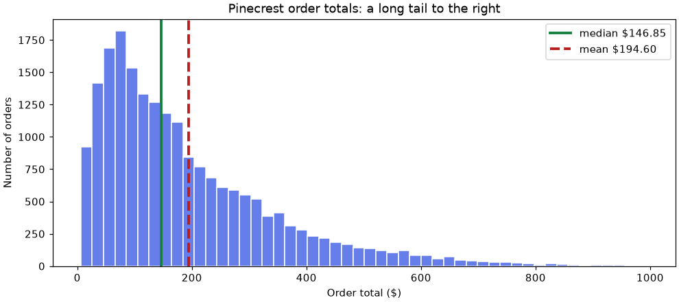
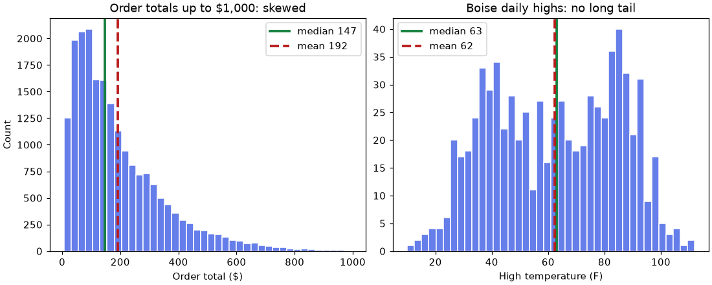

📏 Lesson 4.1: Descriptive Statistics I: Center and Spread
Boil 20,302 orders down to two honest numbers, one for what is typical and one for how much orders vary, and learn to tell when a familiar summary is quietly misleading you.
🎯 Learning Objectives
By the end of this lesson, you will be able to:
- Compute the mean, median and mode of a column with pandas and say what each one measures
- Recognize when the mean misleads, and choose the median instead, using Pinecrest's skewed order totals
- Compute range, variance, standard deviation and interquartile range (IQR), and explain each in the units of the data
- Explain the difference between dividing by
nand byn - 1, and predict which one NumPy and pandas use by default - Pair the right measure of center with the right measure of spread for a given column
In This Lesson
🧭 Two Questions About Any Column
You can load data, clean it, reshape it and draw it. This module adds the part that turns tables and charts into claims you can defend: statistics. It starts with the simplest and most used tools of all, the ones that describe a column of numbers.
💡 Mental Model: The Restaurant Review
Nobody reads 1,000 reviews before choosing a restaurant. You look at the average rating, and then, if you are careful, at how much the reviews disagree. A place with a 4.2 where everyone gave a 4 is a different restaurant from a 4.2 made of fives and ones. Two numbers, what is typical and how much it varies, are the least you need to describe anything honestly.
Those are the two questions of this lesson. Statisticians call the first one center (or central tendency) and the second one spread (or variability). The next lesson adds two more: shape and position.
🤔 Why This Matters
"Our average order is $195" is the kind of sentence that ends up on a slide and then in a budget. By the end of this lesson you will know that for Pinecrest Outfitters that sentence is true, and that most orders are nowhere near $195. Knowing which summary to trust is what stops a correct calculation from becoming a wrong decision.
Start a new notebook in your project folder and load the orders.
import numpy as np
import pandas as pd
orders = pd.read_csv("data/orders.csv", parse_dates=["order_date"])
totals = orders["order_total"]
print(orders.shape)
print(totals.head())Output
(20302, 11)
0 434.90
1 278.90
2 75.90
3 399.80
4 26.71
Name: order_total, dtype: float64⚖️ The Mean: A Balance Point
The mean is the one everybody calls "the average": add the values up and divide by how many there are.
print(totals.sum())
print(len(totals))
print(totals.sum() / len(totals))
print(totals.mean())Output
3950701.45
20302
194.59666289035565
194.59666289035565All the orders together come to about $3.95 million, there are 20,302 of them, so the mean order is $194.60. .mean() does the same division for you.
A good way to picture the mean is as the balance point of the data. Imagine every order as a weight placed on a ruler at its dollar value. The mean is where you would put your finger to make the ruler balance. One way to see that in numbers: the distances above the mean and the distances below it cancel exactly.
deviations = totals - totals.mean()
print(abs(round(deviations.sum(), 6)))Output
0.0(Without the rounding you would see something like -1.5e-11: zero, apart from floating-point dust.)
The balance picture also shows the mean's weakness. A weight far out on the ruler has a lot of leverage. Here are five ordinary orders, and then the same five plus one of Pinecrest's real bulk orders.
five = np.array([42.50, 88.00, 150.00, 163.25, 271.00])
six = np.append(five, 4893.00)
print("five orders:", five.mean())
print("six orders :", six.mean())Output
five orders: 142.95
six orders : 934.625One order moved the "typical" value from about $143 to about $935, a number that describes none of the six orders. Keep that in mind for the next few minutes.
🎯 The Median: The Middle Order
The median answers "what is typical?" in a different way. Line the values up from smallest to largest and take the one in the middle. Half of the values are below it and half are above. With an even number of values there is no single middle, so the median is the mean of the two middle ones.
print(np.sort(five))
print("five orders:", np.median(five)) # the middle value
print("six orders :", np.median(six)) # halfway between 150.00 and 163.25Output
[ 42.5 88. 150. 163.25 271. ]
five orders: 150.0
six orders : 156.625The bulk order moved the median from $150.00 to $156.63. It could have been $4,893 or $4,893,000 and the median would be the same, because the median only cares that the new value is somewhere above the middle. A statistic that barely reacts to extreme values is called robust. The median is robust. The mean is not.
Now the real column:
print("mean :", round(totals.mean(), 2))
print("median:", totals.median())
print("share of orders below the mean:", round((totals < totals.mean()).mean(), 3))Output
mean : 194.6
median: 146.85
share of orders below the mean: 0.626The median order is $146.85, almost $48 less than the mean. And 63% of orders are smaller than the "average" order. That is not a mistake in either number. They are answering slightly different questions, and the gap between them is information.
💡 Reading the Last Line
totals < totals.mean() is a column of True/False. Python counts True as 1 and False as 0, so the mean of that column is the share of rows where the condition holds. You will use "the mean of a boolean is a proportion" constantly in this module.
🪤 When the Mean Misleads
A picture explains the $48 gap faster than any formula. Draw a histogram of the order totals and mark both centers on it. (The chart stops at $1,000 so the main body of the data is visible; the code prints how many orders are beyond the right edge.)
import matplotlib.pyplot as plt
fig, ax = plt.subplots(figsize=(9, 4), layout="constrained")
ax.hist(totals[totals <= 1000], bins=50, color="#667eea", edgecolor="white")
ax.axvline(totals.median(), color="#15803d", linewidth=2.5,
label=f"median ${totals.median():,.2f}")
ax.axvline(totals.mean(), color="#b91c1c", linewidth=2.5, linestyle="--",
label=f"mean ${totals.mean():,.2f}")
ax.set_xlabel("Order total ($)")
ax.set_ylabel("Number of orders")
ax.set_title("Pinecrest order totals: a long tail to the right")
ax.legend()
plt.show()
print("orders above $1,000 (not drawn):", (totals > 1000).sum())Output
orders above $1,000 (not drawn): 37
Most orders are modest. A long, thin tail of large orders stretches to the right. Data shaped like this is called right-skewed, and it is the normal shape of anything about money: order totals, salaries, house prices, donations. The tail has leverage on the balance point, so the mean sits to the right of the median.
Is It Just the Bulk Orders?
In Lesson 0.1 you met Pinecrest's largest order, $4,893, and learned it was a bulk purchase of one product (the data README says who buys this way: outfitters). There are twelve such orders, all above $2,000. It is tempting to blame them for the whole gap. Check before you believe it.
is_bulk = totals > 2000
print("bulk orders:", is_bulk.sum())
print("mean without them :", round(totals[~is_bulk].mean(), 2))
print("median without them:", totals[~is_bulk].median())Output
bulk orders: 12
mean without them : 192.63
median without them: 146.85Removing the twelve bulk orders lowers the mean by about $2 and leaves the median exactly where it was. The gap is still there. It does not come from a dozen dramatic orders. It comes from the whole tail: the 1,131 orders above $500 that are perfectly ordinary purchases of a tent and a sleeping bag.
big = totals > 500
print("orders above $500:", big.sum(), f"({big.mean():.1%} of all orders)")
print("mean of the rest :", round(totals[~big].mean(), 2))Output
orders above $500: 1131 (5.6% of all orders)
mean of the rest : 166.69✅ The Honest Conclusion
Neither number is wrong. The mean ($194.60) is the right number if the question is about totals: multiply it by the number of orders and you get revenue. The median ($146.85) is the right number if the question is about a typical order: what a customer usually spends. When they differ this much, report both and say which is which.
A Stress Test
Real files contain typing errors. Suppose one order was entered as $1,000,000. How badly does each summary break?
with_typo = pd.concat([totals, pd.Series([1_000_000.0])], ignore_index=True)
print("mean :", round(totals.mean(), 2), "->", round(with_typo.mean(), 2))
print("median:", totals.median(), "->", with_typo.median())Output
mean : 194.6 -> 243.84
median: 146.85 -> 146.85One bad row out of 20,303 raised the mean by $49. The median did not move at all. You will use with_typo again when you reach spread.
| Your column looks like | Report | Why |
|---|---|---|
| Roughly symmetric, no extreme values (temperatures, ratings) | Mean | Uses every value; mean and median nearly agree anyway |
| Skewed, or with a few extreme values (money, counts, durations) | Median, often with the mean beside it | The median describes the typical case; the mean describes the total |
| Possibly containing errors you have not cleaned yet | Median | A bad row cannot move it far |
| Needed for a total or a forecast (revenue = mean × count) | Mean | Only the mean multiplies back to the total |
🏆 The Mode: The Most Common Value
The mode is the value that appears most often. It is the only measure of center that works for categories, where adding and sorting make no sense.
print(orders["payment_method"].value_counts())
print()
print(orders["payment_method"].mode())Output
payment_method
card 12392
digital_wallet 4794
cash 1614
gift_card 1502
Name: count, dtype: int64
0 card
Name: payment_method, dtype: strCard is the modal payment method. Notice that .mode() returned a Series, not a single value. That is because there can be a tie, and pandas gives you every winner:
print(pd.Series([1, 1, 2, 2, 3]).mode().tolist())
print(orders["payment_method"].mode()[0]) # take the first when you need one valueOutput
[1, 2]
cardThe mode is also useful for whole-number counts with few distinct values. How many units does a line of an order usually contain?
items = pd.read_csv("data/order_items.csv")
quantity = items["quantity"]
print("mode :", quantity.mode()[0])
print("median:", quantity.median())
print("mean :", round(quantity.mean(), 2))Output
mode : 1
median: 1.0
mean : 1.43The most common quantity is 1 and so is the median. A mean of 1.43 units is true and describes no actual order line. For a count like this, "most lines are for a single item" (the mode) is the clearest summary you can give.
⚠️ The Mode of a Measured Quantity Means Little
For a column with thousands of different values, the "most common value" is mostly an accident.
print(totals.mode()[0], "appears", (totals == totals.mode()[0]).sum(), "times")
print("distinct totals:", totals.nunique())Output
53.9 appears 114 times
distinct totals: 6310$53.90 "wins" with 114 of 20,302 orders (half of one percent), mostly because one popular $46.95 item plus $6.95 shipping comes to exactly that. For continuous data, ask where the histogram peaks instead. In the chart above, the tallest bars sit below $100.
↔️ Spread: Range, Variance, Standard Deviation
Center is half the story. Compare the daily high temperatures in two Pinecrest store cities over the same two years.
weather = pd.read_csv("data/store_weather.csv", parse_dates=["date"])
boise = weather.loc[weather["city"] == "Boise", "high_f"]
asheville = weather.loc[weather["city"] == "Asheville", "high_f"]
print("Boise mean:", round(boise.mean(), 1), " median:", boise.median())
print("Asheville mean:", round(asheville.mean(), 1), " median:", asheville.median())Output
Boise mean: 62.4 median: 63.0
Asheville mean: 66.5 median: 66.0Four degrees apart on average, and in each city the mean and median agree, so there is no skew to worry about. If you stopped here you would stock the two stores almost identically. Yet anyone who has lived in both places knows the climates are nothing alike. The difference is in the spread.
Range: The Simplest Measure
print("Boise :", boise.min(), "to", boise.max(), " range", boise.max() - boise.min())
print("Asheville:", asheville.min(), "to", asheville.max(), " range", asheville.max() - asheville.min())Output
Boise : 10 to 112 range 102
Asheville: 27 to 106 range 79The range is the largest value minus the smallest. Boise's highs span 102 degrees and Asheville's 79. The range is easy to explain, but it is built from just two values, the two most unusual days in the whole record. One freak day changes it, and it tells you nothing about the other 729 days.
Variance: The Average Squared Distance from the Mean
A better measure uses every value. The idea: find how far each value is from the mean, and average those distances. Work it by hand once on five numbers, the tents one store sold on five days.
tents = np.array([4, 7, 5, 10, 4])
mean = tents.mean()
deviations = tents - mean
print("mean :", mean)
print("deviations :", deviations)
print("their sum :", deviations.sum())
print("squared deviations:", deviations ** 2)
print("sum of squares :", (deviations ** 2).sum())Output
mean : 6.0
deviations : [-2. 1. -1. 4. -2.]
their sum : 0.0
squared deviations: [ 4. 1. 1. 16. 4.]
sum of squares : 26.0The plain deviations add up to zero (that is the balance point again), so averaging them is useless. Squaring makes every distance positive and counts big misses more heavily than small ones. The variance is the sum of squared deviations divided by the number of values, or by one less than that. The next section explains the "one less". For now, here are both:
n = len(tents)
print("divide by n :", (deviations ** 2).sum() / n)
print("divide by n - 1:", (deviations ** 2).sum() / (n - 1))Output
divide by n : 5.2
divide by n - 1: 6.5Standard Deviation: Back to Real Units
The variance has an awkward unit: tents squared, or for the weather, degrees squared. Take the square root and you are back in the units of the data. That square root is the standard deviation, almost always shortened to SD.
print(np.sqrt(6.5))
print(pd.Series(tents).std())Output
2.5495097567963922
2.5495097567963922Read it as "a typical distance from the mean". This store sells 6 tents a day, give or take about 2.5. Now the two cities:
print("Boise SD:", round(boise.std(), 1), "degrees")
print("Asheville SD:", round(asheville.std(), 1), "degrees")Output
Boise SD: 22.5 degrees
Asheville SD: 15.5 degreesBoise's highs are typically about 22.5 degrees away from its mean, Asheville's about 15.5. That is the difference between a high-desert city with hot summers and cold winters and a milder mountain town, and it matters for a retailer: Boise needs both the snow gear and the sun hats.
💡 "Typical Distance" Is a Reading Aid, Not the Definition
The SD is the square root of the average squared distance, which is a little larger than the plain average distance because squaring gives big deviations extra weight. For the tents, the average absolute deviation is 2.0 and the SD is 2.5. "A typical distance from the mean" is still the right way to say it in a sentence.
➗ Sample or Population? The n - 1 Question
You just saw two variances for the same five numbers: 5.2 and 6.5. Both are in every statistics library, and the two libraries you use most have different defaults.
print("NumPy np.std(tents) :", np.std(tents))
print("pandas pd.Series(tents).std() :", pd.Series(tents).std())
print("NumPy np.std(tents, ddof=1) :", np.std(tents, ddof=1))Output
NumPy np.std(tents) : 2.280350850198276
pandas pd.Series(tents).std() : 2.5495097567963922
NumPy np.std(tents, ddof=1) : 2.5495097567963922NumPy divides by n. pandas divides by n - 1. (When you standardized columns with .std() on NumPy arrays in Lesson 1.3, you were using the divide-by-n version without being told there was a choice.) The argument ddof ("delta degrees of freedom") is the number subtracted from n: NumPy's default is ddof=0, pandas's is ddof=1. Which is right depends on what your data is.
- Population (
ddof=0, divide byn): your data is the entire group you care about, and you only want to describe it. Every order Pinecrest took in 2024 and 2025, if those two years are all you are talking about. - Sample (
ddof=1, divide byn - 1): your data is a part of something bigger, and you want to estimate the spread of the bigger thing. Five days of tent sales, standing in for how this store sells in general.
Why Subtract One?
Because a sample is measured against its own mean, and its own mean is, by construction, the point the sample's values are closest to. The true mean of the bigger population is almost always somewhere else, a little farther from the sample's values. So deviations from the sample mean come out too small, and dividing by n gives a variance that is too small on average. Dividing by the slightly smaller n - 1 corrects for it.
You do not have to take that on faith. Treat all 20,302 order totals as a population whose variance you know exactly. Then draw 100,000 small samples of 5 orders, compute each sample's variance both ways, and see which method is right on average.
rng = np.random.default_rng(42)
population = totals.to_numpy()
samples = rng.choice(population, size=(100_000, 5)) # 100,000 rows of 5 orders
true_var = population.var() # ddof=0: it IS the population
print("true population variance :", round(true_var))
print("average of n versions:", round(samples.var(axis=1).mean()))
print("average of n - 1 versions:", round(samples.var(axis=1, ddof=1).mean()))Output
true population variance : 31954
average of n versions: 25560
average of n - 1 versions: 31950Dividing by n underestimates the true variance by about a fifth (with samples of 5 it comes out at 4/5 of the truth on average). Dividing by n - 1 lands within a tenth of a percent. That is the whole reason the sample formula exists.
✅ A Rule You Can Use
If you are unsure, use ddof=1, the pandas default. Data in practice is nearly always a sample of something larger. And with more than a few hundred values the choice hardly matters:
print("order totals, ddof=1:", round(totals.std(), 3))
print("order totals, ddof=0:", round(totals.std(ddof=0), 3))Output
order totals, ddof=1: 178.761
order totals, ddof=0: 178.757Less than half a cent of difference on an SD of $178.76. The n - 1 question matters for small samples and for getting the same answer as a colleague or a textbook. It is not something to lose sleep over with 20,302 rows.
📦 The IQR: Spread That Shrugs Off Extremes
The order totals have an SD of $178.76 around a mean of $194.60. Read naively, "give or take $179" suggests typical orders run from about $16 to about $373, and that some orders are below zero. For a skewed column the SD is inflated by the same tail that inflates the mean, because it is built on squared distances from that mean.
The robust partner of the median is the interquartile range. Sort the values and cut them into four equal groups. The cut points are the quartiles: Q1 has a quarter of the values below it, Q2 is the median, Q3 has three quarters below it. The IQR is Q3 - Q1, the width of the middle half of the data.
q1 = totals.quantile(0.25)
q3 = totals.quantile(0.75)
iqr = q3 - q1
print("Q1 :", q1)
print("Q3 :", q3)
print("IQR:", round(iqr, 2))Output
Q1 : 78.85
Q3 : 264.95
IQR: 186.1That reads as a plain sentence: the middle half of Pinecrest's orders are between $78.85 and $264.95, a span of $186.10. No negative dollars, no assumption about shape, and nothing a single huge order can distort. Bring back the $1,000,000 typo to see how each measure of spread copes.
typo_iqr = with_typo.quantile(0.75) - with_typo.quantile(0.25)
print("range:", round(totals.max() - totals.min(), 2), "->", round(with_typo.max() - with_typo.min(), 2))
print("SD :", round(totals.std(), 2), "->", round(with_typo.std(), 2))
print("IQR :", round(iqr, 2), "->", round(typo_iqr, 2))Output
range: 4886.62 -> 999993.62
SD : 178.76 -> 7019.02
IQR : 186.1 -> 186.13One bad row multiplied the SD by 39 and moved the IQR by about two cents. (.quantile() has more to offer, including percentiles and what happens when a cut point falls between two values. That is the start of the next lesson.)
Pairing Center with Spread
| Measure of spread | What it is | Uses | Robust to extremes? | Pairs with |
|---|---|---|---|---|
| Range | max minus min | 2 values | No, it is the extremes | A quick sanity check |
| Variance | average squared deviation from the mean | every value | No | Formulas and later methods |
| Standard deviation | square root of the variance | every value | No | The mean |
| IQR | Q3 minus Q1 | the middle half | Yes | The median |
So there are two standard pairs. For roughly symmetric data, report mean and SD: "Boise's daily high averages 62°F with an SD of 23°F". For skewed data or data with extreme values, report median and IQR: "the median order is $147, and the middle half of orders fall between $79 and $265".
🕳️ Missing Values in Summaries
One practical matter before the project. Six store-days in daily_sales.csv have no revenue recorded. pandas and NumPy treat them differently: NumPy's mean returned nan in Lesson 1.1, while pandas quietly skips missing values, as you saw in Lesson 2.1.
daily = pd.read_csv("data/daily_sales.csv", parse_dates=["date"])
revenue = daily["revenue"]
print("rows:", len(revenue), " values present:", revenue.count())
print("pandas mean :", round(revenue.mean(), 2))
print("NumPy mean :", np.mean(revenue.to_numpy()))
print("np.nanmean :", round(np.nanmean(revenue.to_numpy()), 2))Output
rows: 2903 values present: 2897
pandas mean : 7435.04
NumPy mean : nan
np.nanmean : 7435.04pandas summaries skip missing values by default (skipna=True), so .mean(), .median(), .std() and .quantile() all describe the 2,897 values that exist. That is usually what you want, but it is a decision made for you. Two habits keep it honest: print .count() next to len() so you know how many values a summary is based on, and ask whether the missing rows could be different from the rest. Six scattered days out of 2,903 will not change any conclusion. In Lesson 4.2 you will meet survey questions where most of one group skipped the question, and there it changes everything.
⚠️ Common Mistakes
None of these make you a bad analyst. Each one is a place where a tool does something reasonable that you did not ask for. Learn the symptom and you will catch it in seconds.
1. Two Libraries, Two Standard Deviations
first_week = revenue.head(7)
print(np.std(first_week.to_numpy()))
print(first_week.std())Output (two answers for the same numbers)
1218.0600796817396
1315.6552552498952What happened: NumPy divided by n and pandas by n - 1. With 7 values the two differ by 8%. Fix: decide which you mean and say it in the code: np.std(x, ddof=1) or series.std(ddof=0). When your number does not match someone else's, check ddof first.
2. Asking for the Mean of Text
orders["payment_method"].mean()Error
TypeError: Cannot perform reduction 'mean' with string dtypeWhat it means: "card" plus "cash" divided by two is not a thing. The column holds categories. Fix: the summary for categories is counts and the mode: .value_counts() and .mode(). The same message appears when a numeric column was read as text because of a stray $ or N/A; clean it first (Lesson 2.3).
3. Averaging Averages
You have the mean order total for each of the five values of store (the four stores and Online) and want the overall mean, so you average the five numbers.
store_means = orders.groupby("store")["order_total"].mean()
print(round(store_means.mean(), 2))
print(round(totals.mean(), 2))Output (the first number is wrong)
182.66
194.6What happened: averaging the five means treats Asheville's 1,413 orders as if they counted as much as Online's 12,854. Fix: compute the mean from the original rows. If you only have the group means, weight each one by its group's size:
store_counts = orders.groupby("store")["order_total"].count()
print(round(np.average(store_means, weights=store_counts), 2))Output
194.64. A nan Where a Number Should Be
You saw it above: np.mean() on an array containing a missing value returns nan, without an error. Fix: use the pandas method, or NumPy's np.nanmean, np.nanmedian, np.nanstd, and always know how many values were skipped.
5. Reporting Mean and SD for Skewed Data out of Habit
There is no error message for this one, which is why it is the most common. "Orders average $195 ± $179" is arithmetically right and paints a picture, a symmetric hump centered on $195, that does not exist. Fix: look at a histogram before you choose your summary. If the mean and median disagree noticeably, lead with the median and IQR.
🛠️ Project: The Typical Order Memo
Pinecrest's marketing lead has asked for "the average order value" for a slide. You are going to give a better answer than the one she asked for: a small table that shows center and spread for three very different columns, a chart, and a two-sentence recommendation. Work in a new notebook called lesson_4_1_project. Allow about 35 minutes.
🛠️ Step 1: Write a summary function (10 min)
You will summarize several columns the same way, so write the recipe once. The function returns a dictionary, which pandas can turn into a table row later. The last entry measures how far the mean sits above the median, as a percentage of the median: a quick skew alarm.
import numpy as np
import pandas as pd
import matplotlib.pyplot as plt
def center_and_spread(values):
"""Summarize one numeric column: count, center and spread."""
values = pd.Series(values).dropna()
q1, q3 = values.quantile(0.25), values.quantile(0.75)
return {
"n": len(values),
"mean": values.mean(),
"median": values.median(),
"sd": values.std(), # sample SD (ddof=1)
"iqr": q3 - q1,
"mean_vs_median_pct": (values.mean() - values.median()) / values.median() * 100,
}
orders = pd.read_csv("data/orders.csv", parse_dates=["order_date"])
for name, value in center_and_spread(orders["order_total"]).items():
print(f"{name:<20} {value:>10,.2f}")Output
n 20,302.00
mean 194.60
median 146.85
sd 178.76
iqr 186.10
mean_vs_median_pct 32.51The mean is about 33% above the median. Anything beyond about 10% deserves a histogram before you report a mean.
🛠️ Step 2: Summarize three different columns (5 min)
Apply the function to order totals, to the list prices in the product catalog, and to Boise's daily high temperature. Building a DataFrame from a dictionary of dictionaries gives one column per data source; .T flips it so each source is a row.
products = pd.read_csv("data/products.csv")
weather = pd.read_csv("data/store_weather.csv", parse_dates=["date"])
boise_highs = weather.loc[weather["city"] == "Boise", "high_f"]
report = pd.DataFrame({
"order total ($)": center_and_spread(orders["order_total"]),
"list price ($)": center_and_spread(products["price"]),
"Boise high (F)": center_and_spread(boise_highs),
}).T
print(report.round(2))Output
n mean median sd iqr mean_vs_median_pct
order total ($) 20302.0 194.60 146.85 178.76 186.1 32.51
list price ($) 242.0 121.80 82.95 117.14 116.0 46.84
Boise high (F) 731.0 62.43 63.00 22.52 40.0 -0.91Order totals and list prices are both skewed (mean far above the median). Boise's temperatures are not: mean and median agree within 1%.
🛠️ Step 3: Check how much the bulk orders matter (5 min)
Someone will ask whether the twelve outfitter orders distort the numbers. Have the answer ready.
without_bulk = orders.loc[orders["order_total"] <= 2000, "order_total"]
comparison = pd.DataFrame({
"all orders": center_and_spread(orders["order_total"]),
"without bulk": center_and_spread(without_bulk),
}).T
print(comparison[["n", "mean", "median", "sd", "iqr"]].round(2))Output
n mean median sd iqr
all orders 20302.0 194.60 146.85 178.76 186.1
without bulk 20290.0 192.63 146.85 158.43 186.0Twelve orders out of 20,302 change the SD by $20 and the IQR by 10 cents. The median and IQR are safe to report without a footnote.
🛠️ Step 4: Draw the evidence (10 min)
Put the skewed column and the symmetric one side by side, each with its mean and median marked. The helper function keeps the two panels consistent.
def hist_with_centers(ax, values, title, xlabel, bins=40):
ax.hist(values, bins=bins, color="#667eea", edgecolor="white")
ax.axvline(values.median(), color="#15803d", linewidth=2.5, label=f"median {values.median():,.0f}")
ax.axvline(values.mean(), color="#b91c1c", linewidth=2.5, linestyle="--", label=f"mean {values.mean():,.0f}")
ax.set_title(title)
ax.set_xlabel(xlabel)
ax.legend()
fig, (ax1, ax2) = plt.subplots(1, 2, figsize=(10, 4), layout="constrained")
shown = orders.loc[orders["order_total"] <= 1000, "order_total"]
hist_with_centers(ax1, shown, "Order totals up to $1,000: skewed", "Order total ($)")
hist_with_centers(ax2, boise_highs, "Boise daily highs: no long tail", "High temperature (F)")
ax1.set_ylabel("Count")
fig.savefig("typical_order.png", dpi=110)
plt.show()
🛠️ Step 5: Write the memo (5 min)
Numbers do not explain themselves. Pull yours into a few plain sentences, generated from the table so nothing is typed by hand.
r = report.loc["order total ($)"]
q1 = orders["order_total"].quantile(0.25)
q3 = orders["order_total"].quantile(0.75)
memo = f"""TYPICAL ORDER MEMO
Based on {r['n']:,.0f} orders, 2024-2025.
A typical order is ${r['median']:,.2f} (the median). The middle half of orders
fall between ${q1:,.2f} and ${q3:,.2f}.
The mean order is ${r['mean']:,.2f}, {r['mean_vs_median_pct']:.0f}% above the median, because a
long tail of large orders pulls it up. Use the mean for revenue math
(mean x number of orders) and the median to describe what customers spend."""
print(memo)Output
TYPICAL ORDER MEMO
Based on 20,302 orders, 2024-2025.
A typical order is $146.85 (the median). The middle half of orders
fall between $78.85 and $264.95.
The mean order is $194.60, 33% above the median, because a
long tail of large orders pulls it up. Use the mean for revenue math
(mean x number of orders) and the median to describe what customers spend.✅ Project Completion Checklist
center_and_spread()returns six values and drops missing values before computing- Your table has three rows, and you can say which columns are skewed from the last column alone
- You compared the summaries with and without the twelve bulk orders
- Your figure shows mean and median lines on both panels and is saved as
typical_order.png - The memo reports the median with the quartiles and says what the mean is for
- Every number in the memo comes from a variable, none typed by hand
🏋️ Hands-on Exercises
Try each one before opening the solution. If your number differs from the solution's, that is a clue worth following, not a failure.
🏋️ Exercise 1: Three Centers for One Column
daily_sales.csv has a staff_on_duty column. Compute its mean, median and mode. Which would you use to answer "how many people usually work a shift?" and why are the three so close or so far apart?
💡 Hint
.mode() returns a Series; take element [0]. A whole-number count with a modest range is a case where all three are meaningful.
✅ Solution
daily = pd.read_csv("data/daily_sales.csv", parse_dates=["date"])
staff = daily["staff_on_duty"]
print("mean :", round(staff.mean(), 2))
print("median:", staff.median())
print("mode :", staff.mode()[0])
print("range :", staff.min(), "to", staff.max())Output
mean : 6.49
median: 6.0
mode : 5
range : 2 to 20The mode (5) and median (6) are real staffing levels and the natural answers to "usually". The mean (6.49) is a bit higher because a few very busy days need up to 20 people: a mild right skew.
🏋️ Exercise 2: Which City Has the More Variable Nights?
Using low_f in store_weather.csv, compare Flagstaff and Asheville: mean, range, standard deviation and IQR of the nightly low. Write one sentence for each city in the form "lows average … with an SD of …".
💡 Hint
Filter with weather.loc[weather["city"] == "Flagstaff", "low_f"]. A short loop over the two city names avoids repeating yourself.
✅ Solution
for city in ["Flagstaff", "Asheville"]:
lows = weather.loc[weather["city"] == city, "low_f"]
iqr_lows = lows.quantile(0.75) - lows.quantile(0.25)
print(f"{city:<10} mean {lows.mean():5.1f} range {lows.max() - lows.min():3d} "
f"SD {lows.std():5.1f} IQR {iqr_lows:5.1f}")Output
Flagstaff mean 39.6 range 71 SD 14.0 IQR 21.0
Asheville mean 51.7 range 67 SD 13.3 IQR 19.5Flagstaff's nights are colder on average and vary more by every measure. Because temperatures are roughly symmetric, mean with SD is a fair summary here.
🏋️ Exercise 3: Find the ddof
A colleague says the standard deviation of Bend's visitor counts for the first ten days in the file is 68.2. You get a different number with pandas. Compute it both ways, work out which ddof your colleague used, and say which you would report if those ten days are meant to represent Bend in general.
💡 Hint
daily.loc[daily["store"] == "Bend", "visitors"].head(10). Then .std() and .std(ddof=0).
✅ Solution
bend10 = daily.loc[daily["store"] == "Bend", "visitors"].head(10)
print("ddof=1 (pandas default):", round(bend10.std(), 1))
print("ddof=0 (NumPy default) :", round(bend10.std(ddof=0), 1))
print("np.std :", round(np.std(bend10.to_numpy()), 1))Output
ddof=1 (pandas default): 71.9
ddof=0 (NumPy default) : 68.2
np.std : 68.2The colleague used ddof=0, probably by calling np.std. Ten days standing in for Bend in general is a sample, so ddof=1 is the one to report. With only ten values the two differ by 5%.
🏋️ Exercise 4: Break the Catalog (Stretch)
The most expensive product costs $616.95. Make a copy of the price column in which that one price has lost its decimal point (61695.0). Compare mean, median, SD and IQR before and after. Then add a fifth summary: the 5% trimmed mean, scipy.stats.trim_mean(values, 0.05), which drops the lowest 5% and highest 5% of values before averaging. Where does it sit between the mean and the median, and how well does it survive the typo?
💡 Hint
prices.idxmax() gives the row label of the largest value. Copy first (prices.copy()), then assign with .loc.
✅ Solution
from scipy import stats
prices = products["price"]
broken = prices.copy()
broken.loc[prices.idxmax()] = 61695.0
for label, col in [("clean ", prices), ("broken", broken)]:
col_iqr = col.quantile(0.75) - col.quantile(0.25)
print(f"{label} mean {col.mean():7.2f} trimmed {stats.trim_mean(col, 0.05):7.2f} "
f"median {col.median():6.2f} SD {col.std():8.2f} IQR {col_iqr:6.2f}")Output
clean mean 121.80 trimmed 108.37 median 82.95 SD 117.14 IQR 116.00
broken mean 374.19 trimmed 108.37 median 82.95 SD 3959.81 IQR 116.00One bad price triples the mean and multiplies the SD by 34. The median and IQR do not move at all, and the trimmed mean does not either, because the bad value is among the 5% it discards. The trimmed mean is a compromise: it uses most of the data, like the mean, and ignores the extremes, like the median.
🎯 Quick Quiz
🎯 Check Your Understanding
Question 1: Pinecrest's order totals have a mean of $194.60 and a median of $146.85. What is the best explanation?
Question 2: What does this print?
ratings = np.array([2, 4, 4, 4, 5, 5, 7, 9])
print(np.std(ratings))Question 3: A column of delivery times is strongly right-skewed and may contain a few data-entry errors. Which pair of summaries describes it most faithfully?
Question 4: What does this print?
pay = pd.Series(["card", "cash", "card", "gift_card", "cash"])
print(pay.mode().tolist())Question 5: Store A took 10 orders with a mean of $100. Store B took 90 orders with a mean of $200. What is the mean of all 100 orders?
❓ Common Questions at This Stage
Should I just always use the median for money?
For describing a typical amount, usually yes. But the median cannot be multiplied back into a total: 20,302 orders times the median of $146.85 is about $2.98 million, well short of the real $3.95 million. Budgets, forecasts and anything that adds up need the mean. The safest habit is to report both and label them.
Is a standard deviation of 179 big or small?
By itself, neither. An SD only means something next to the mean and the units. $179 against a mean of $195 is large: orders vary by about as much as their average size. 22.5 degrees against Boise's mean of 62 is moderate. If you need to compare variability between columns in different units, divide the SD by the mean (the "coefficient of variation"): 0.92 for order totals, 0.36 for Boise's highs. It only makes sense for quantities that cannot go below zero in a meaningful way, so be careful with temperatures.
Why square the deviations? Why not just average the absolute distances?
You can. That is the mean absolute deviation, and it is a perfectly good, more robust measure. The squared version won historically because it has convenient mathematical properties: variances of independent quantities add, and the standard deviation fits hand in glove with the normal distribution you will meet in Lesson 4.3. Almost every later method (standard errors, confidence intervals, regression) is built on variance, so it is the one to know.
My data is every order we have. Is that a population or a sample?
It depends on the sentence you want to write. "In 2024 and 2025 the SD of order totals was…" is about those orders only: a population, ddof=0. "Our orders vary by about…" is a claim about how the business behaves, including next month: the two years are then a sample of an ongoing process, ddof=1. With 20,302 rows the two answers are identical to four significant figures, so nobody will be misled either way.
🌟 Going Further: Bonus Challenge
Rerun the n - 1 simulation for sample sizes of 2, 5, 10, 30 and 100. For each size, print the average ddof=0 variance divided by the true variance. You should find it is very close to (n - 1) / n every time. Then do the same for the standard deviation with ddof=1. Is the sample SD right on average? (It is not quite: the square root of an unbiased estimate is itself a little low, most visibly for tiny samples from skewed data. Write down what you observe.)
📓 Learning Journal
Take five minutes to write in your learning journal (the journal.md file you started in Lesson 0.1, or a paper notebook). Jot down:
- Key concepts you learned today
- Techniques that clicked (and the ones that have not, yet)
- Questions or confusion to come back to
- Ideas to try on your own
- Progress and feelings: how did this lesson go for you?
✍️ This lesson's prompt: Think of an "average" you have seen quoted recently: a salary, a house price, a commute, a test score. Would the median have been higher or lower than the mean, and why? Who benefits from quoting one rather than the other?
📝 Lesson Summary
🎓 Key Takeaways
- Describing a column starts with two questions: what is typical (center) and how much it varies (spread)
- The mean is the balance point: it uses every value, multiplies back to the total, and is pulled by extremes
- The median is the middle value: robust, and the better description of a typical case when data is skewed
- The mode is for categories and small whole-number counts;
.mode()returns a Series because ties happen - Variance is the average squared deviation from the mean; the standard deviation is its square root, in the data's own units
- NumPy divides by
n(ddof=0), pandas byn - 1(ddof=1). Useddof=1when the data is a sample of something larger - The IQR is the width of the middle half of the data and ignores the extremes
- Pair mean with SD for symmetric data and median with IQR for skewed data. A histogram tells you which you have
🏆 What You've Accomplished
- You found that Pinecrest's typical order ($147) and its mean order ($195) are different things, and you can explain why to a non-statistician
- You checked a tempting explanation (the bulk orders) against the data and found the real one (the whole tail)
- You computed a variance by hand and proved the
n - 1correction to yourself with 100,000 simulated samples - You wrote a reusable summary function and a memo generated entirely from data
🔭 Looking Ahead
In Lesson 4.2: Descriptive Statistics II: Shape, Position and Outliers you will put a number on skew, locate any value within its column using percentiles and z-scores, apply the standard outlier rules (and decide what to do with what they flag), read describe(), histograms and box plots properly, and summarize by group. It ends with survey data, where the numbers 1 to 5 are not really numbers at all.
📋 Before the Next Lesson
- Keep your
center_and_spread()function. You will extend it. - Run
orders["order_total"].describe()and identify every line of the output except one. (The one you cannot name yet is fine: it is next lesson's.) - Guess, then check: is
visitorsindaily_sales.csvskewed? Compare its mean and median.
🌱 Encouragement for the Journey
Mean, median, standard deviation: you have probably heard these words for years. Today you did something most people who use them never do. You watched each one succeed and fail on real data, and you can now say when to trust it. If the n - 1 argument still feels slippery, that is normal; it took statisticians a while too. Rerun the simulation next week. The numbers will make the case again, and it will feel more obvious each time.